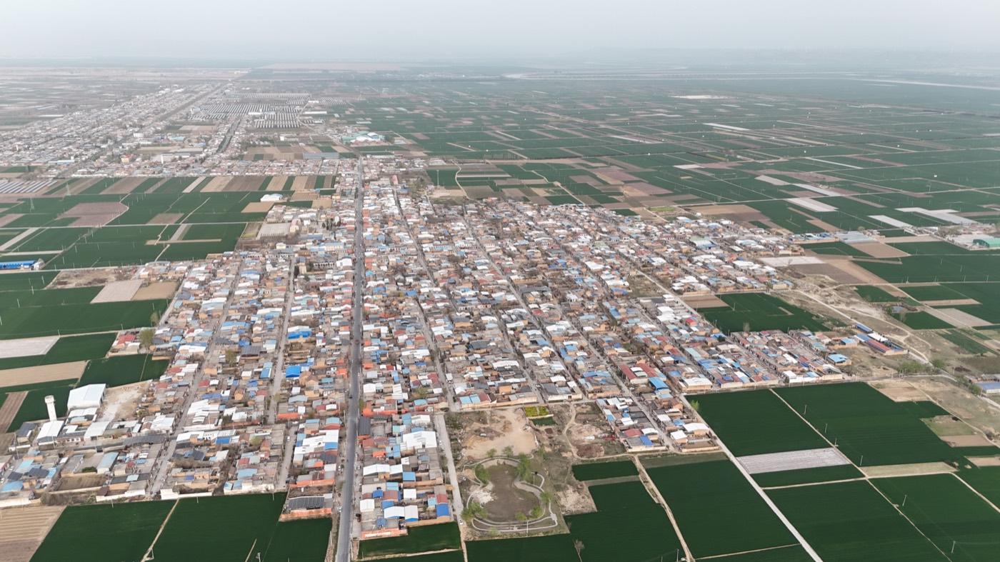

长夏叙事 出品A SUMMER NARRATIVE PRODUCTION
一部关于叙事的纪录片 · 脚本A DOCUMENTARY SCRIPT
记录者 · 李夏Written & Directed by Summer Li
改编自真实事件Based on true events
翻开剧本 ↓OPEN SCRIPT ↓
00:00:00:00 — 第一卷REEL 01
THE WORLD OF SUMMER LI — 开场页PAGE 01
FADE IN:
00:00:15:02
SHOT 01 — 全景 · 拉开WIDE · PUSH IN
INT. 李夏的世界THE WORLD OF SUMMER LI - DAY
一个建筑学背景的叙事者，坐在桌前。
她面前摊着十年间的东西：工作室的视频、奶奶的菜谱、城市的地图、两本书。
她抬头。「把复杂价值，变成公众叙事。」——这是她做过的事，也是接下来你将看到的。
An architecture-trained storyteller sits at her desk. Before her: ten years of material — studio videos, grandmother's recipes, city maps, two books. She looks up. "Turning complex value into public narrative" — what she has done, and what you are about to see.
CHAPTER ONE
SHOT 02 — 00:04:12:00
INT. 矶崎新工作室ISQZAKI'S STUDIO - DAY
摄像机架起。讲故事的人——她走进十间工作室，记录空间如何说话。 Camera up. The storyteller — she enters ten studios, recording how space speaks.
CHAPTER TWO
SHOT 03 — 00:12:40:00
INT. 老宅厨房THE OLD HOUSE KITCHEN - NIGHT
灶火升起来。我的故事——奶奶走后的第十年，一场关于味道的展览。 The stove is lit. My stories — ten years after grandma left, an exhibition about taste.
CHAPTER THREE
SHOT 04 — 00:21:03:00
EXT. 西安城墙XI'AN CITY WALL - DAY
她沿着墙走。城市的剖面——五个系列，把城市读成剖面与图层。 She walks the wall. City sections — five series, reading cities as sections and layers.
CAST — 人物表CHARACTERS
领衔主演STARRING · 冬莲奶奶GRANDMA DONGLIAN
特别出演FEATURING · 矶崎新·胡倩 / HEATHERWICK / 刘克成LIU JIAKUN / 李响LI XIANG
记录者DIRECTED BY · 李夏SUMMER LI
THE WORLD OF SUMMER LI — 场景页PAGE 02
SCENE LIST — 场景清单LOCATIONS
SHOT 05 — 00:42:18:00
EXT. 世界地图WORLD MAP - DAY
从西安到新奥尔良，从美西大环线到云南景迈山。
（点击地图，走进每段足迹）
From Xi'an to New Orleans, from the West loop to Yunnan. (Click the map — step into each footprint.)
道具表PROP LIST
拍摄日程SHOOTING SCHEDULE
FADE OUT.
如果你也有一件复杂的事，想被讲清楚——它值得成为下一个场景。 If you have something complex that deserves a story — it could be the next scene.
summer950420@gmail.com小红书 · SUMMER四二零Xiaohongshu · SUMMER四二零
00:52:00:00
THE WORLD OF SUMMER LI · VOL.01 · 2026 · 长夏叙事出品A SUMMER NARRATIVE PRODUCTION
